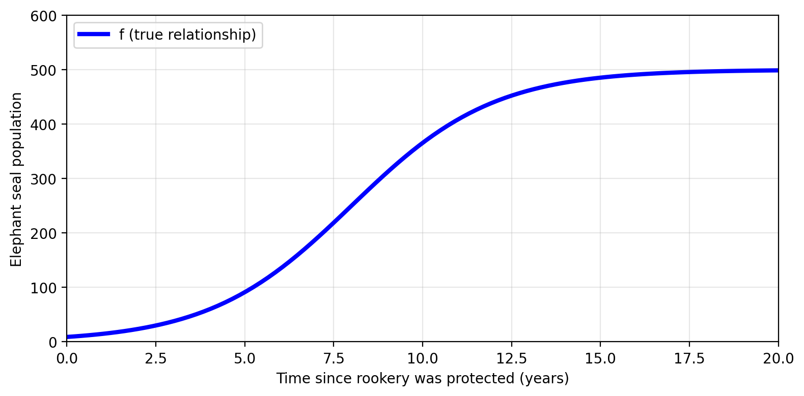
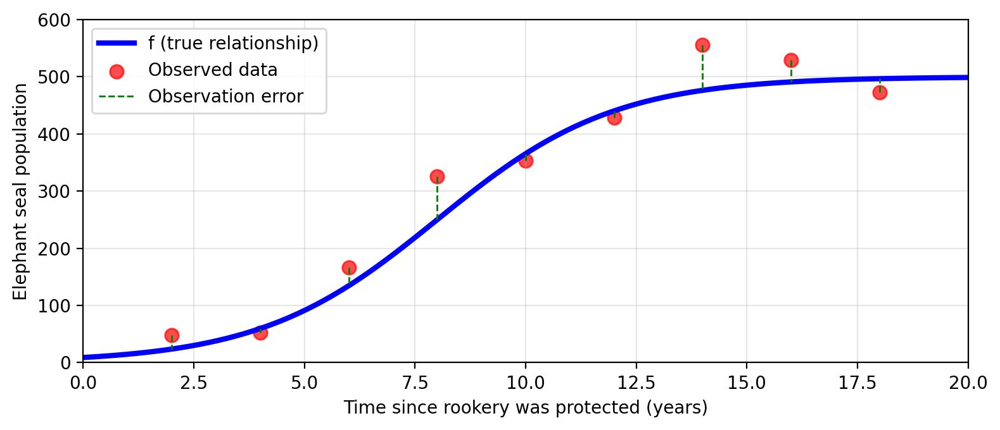
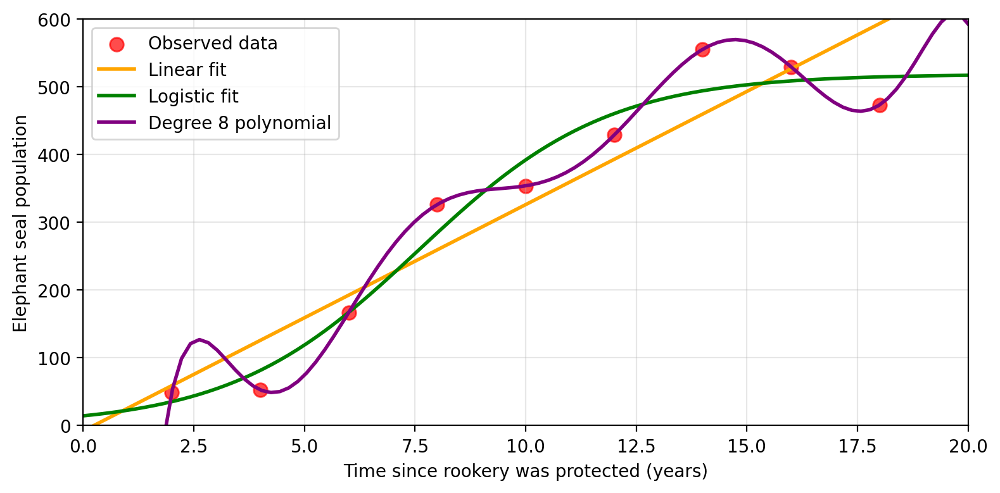
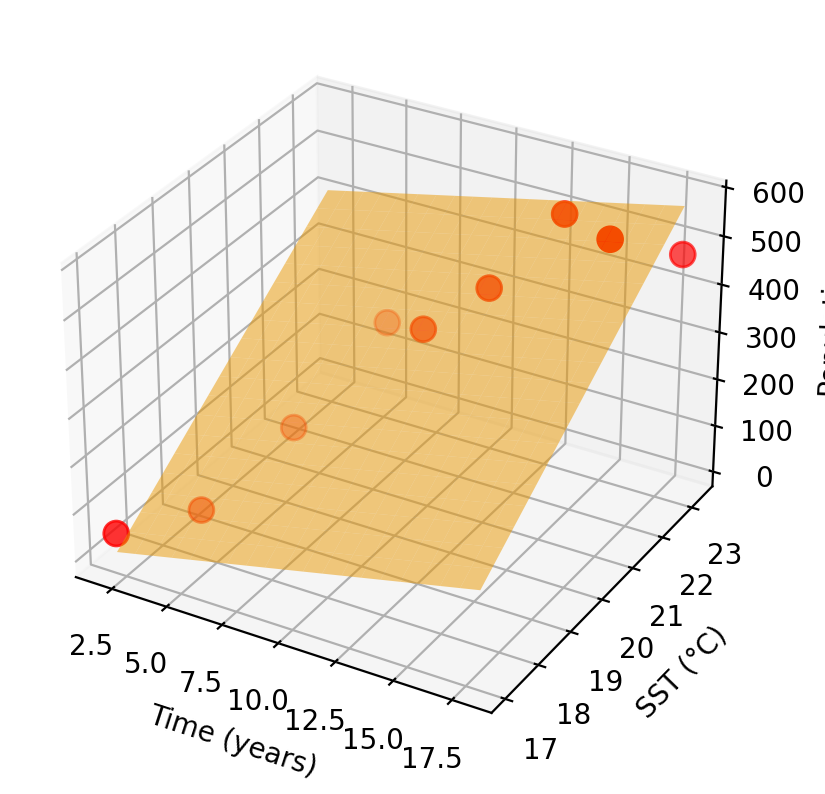
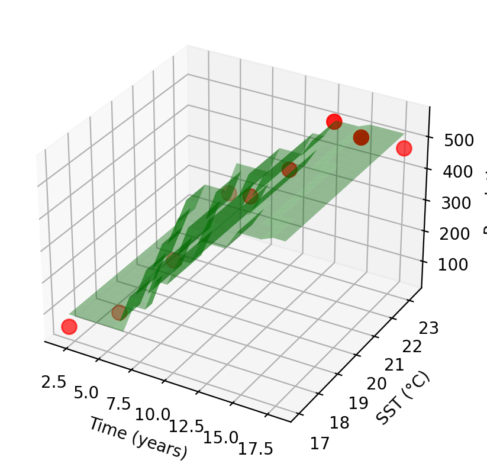
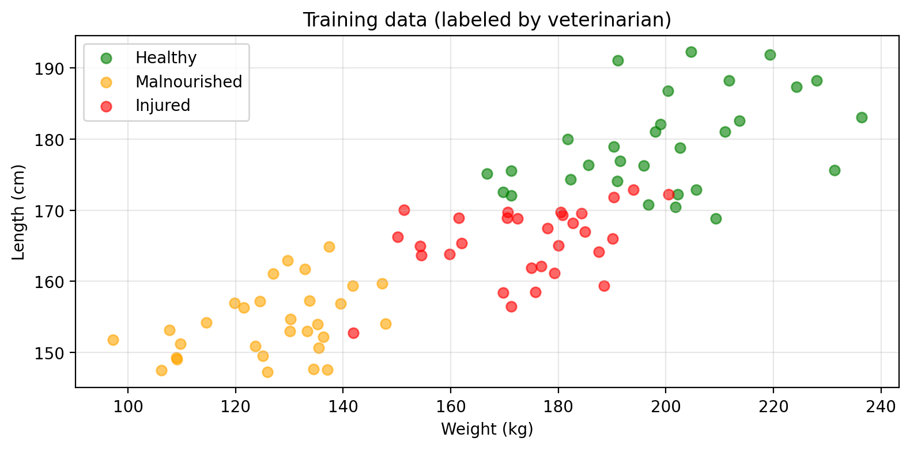
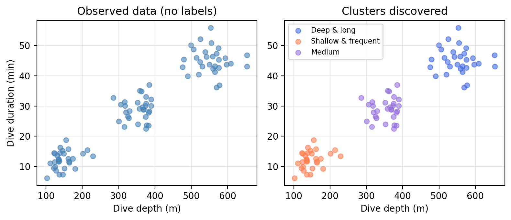

Amanda is a marine scientist investigating how protected areas affect elephant seal populations in California. She wants to understand:

EDS 232
Lesson 2
Learning from data
In this lesson
A guiding example
Researching elephant seals
Amanda is a marine scientist investigating how protected areas affect elephant seal populations in California. She wants to understand:
How does elephant seal population change
in a rookery that has just been protected?
Amanda identifies the following variables
An ideal function \(f\) exists somewhere…
What if Amanda had the true relationship between time and population?
In mathematical terms this means having a function \(f\) such that
\[f(\text{time since protection}) = \text{true population}\]

Check-in
\[f(\text{time since protection}) = \text{true population}\]
What information could Amanda acquire if she had this function \(f\)?
…but we have to estimate \(f\) from data
Amanda has no access to the true \(f\). Her next best option:
estimate \(f\) using observed data.

Observed values \(\neq\) true values
Error is introduced during measurement:
\[f(\text{time}) = \text{true population} = \text{observed population} + \epsilon\]

Many possible estimates for \(f\)
With these observed population values at a given time, Amanda can try to
estimate the real function \(f\) with another function \(\hat{f}\).

How do we choose? Preliminary knowledge of the data, the goal (prediction or inference?), available data volume, error — every choice involves tradeoffs.
The general framework
The general framework
We have \(p\) predictors \(X_1, \ldots, X_p\) and a response variable \(Y\).
We assume there is a relationship:
\[Y = f(X) + \epsilon\]
where \(f\) is a fixed but unknown function of the predictors \(X_1, ..., X_p\) and \(\epsilon\) is an error term (independent of \(X\), mean zero).
Our goal: find an estimate \(\hat{f}(X)\) that approximates \(f(X)\) well.
Why estimate \(f\)?
1. Inference
Use \(\hat{f}\) to understand which predictors are associated with the response and understand the form of this relationship.
2. Prediction
Calculate \(\hat{Y} = \hat{f}(X)\) to predict the value of \(Y\) for new inputs \(X\).
The method we choose often depends on whether our goal is inference, prediction, or both.
Interpretable models may not predict as well, and vice versa.
Check-in
What are some problems or scenarios where inference may be more important than prediction?
What about problems or scenarios where prediction is the priority?
The ML approach
We start with a set of \(n\) observed data points. These are called the training set:
\[\{(x_1, y_1),\, \ldots,\, (x_n, y_n)\}\]
“Training” means using these data points to find an estimate \(\hat{f}\).
The “learning” in machine learning is precisely adjusting \(\hat{f}\) to minimize error on this data.
Example: One variable notation
With one predictor variable (time), Amanda’s data maps to the following vectors:
| Obs. | Time (Predictor) | Population (Response) |
|---|---|---|
| 1 | 2 | 53 |
| \(\vdots\) | \(\vdots\) | \(\vdots\) |
| 5 | 10 | 353 |
| \(\vdots\) | \(\vdots\) | \(\vdots\) |
| 9 | 18 | 473 |
→
\((x_1,y_1) = (2,53)\)
\(\vdots\)
\((x_5,y_5) = (10,353)\)
\(\vdots\)
\((x_9,y_9) = (18,473)\)
Example: Multi-variable notation
If we were to add average annual sea surface temperature (SST) as a second predictor variable, then each \(x_i\) becomes a vector:
| Obs. | Time (Predictor 1) | SST (Predictor 2) | Population (Response) |
|---|---|---|---|
| 1 | 2 | 17.05 | 53 |
| \(\vdots\) | \(\vdots\) | \(\vdots\) | \(\vdots\) |
| 5 | 10 | 20.86 | 353 |
| \(\vdots\) | \(\vdots\) | \(\vdots\) | \(\vdots\) |
| 9 | 18 | 23.27 | 473 |
→
\(x_1 = (x_{1,1}, x_{1,2}) = (2, 17.05)\)
\(y_1 = 53\)
\(\vdots\)
\(x_5 = (x_{5,1}, x_{5,2}) = (10, 20.86)\)
\(y_5 = 353\)
\(\vdots\)
\(x_9 = (x_{9,1}, x_{9,2}) = (18, 23.27)\)
\(y_9 = 473\)
Parametric vs. non-parametric methods
Parametric methods
Parametric methods estimate \(f\) in two steps:
Step 1: Assume a functional form for \(f\)
e.g., linear: \(f(X) = \beta_0 + \beta_1 X_1 + \cdots + \beta_p X_p\)
Step 2: Use the training data to fit the model and estimate the parameters
e.g., find \(\beta_0, \beta_1, \ldots, \beta_p\) that best match the observations
Pros: Works with small datasets · computationally efficient · easier inference
Cons: Assumed form may be far from true \(f\) · predictions may suffer
Parametric example: linear model
Amanda decides to model elephant seal population as linear in time and SST:
\[f(x_1, x_2) = \beta_0 + \beta_1\, \text{time} + \beta_2\, \text{SST}\]
Training the model finds \(\beta_0, \beta_1, \beta_2\) that best fit the observed data. The graph of the fitted \(\hat{f}\) is a plane:

The shape of \(\hat{f}\) was decided before seeing the data.
Non-parametric methods
Non-parametric methods make no assumptions about the functional form of \(f\). They seek an estimate that fits the training data without being “too rough or wiggly”.
Pros: More flexible · can capture complex relationships · potentially better predictions
Cons: Needs more data · can follow noise too closely · may be less interpretable
Non-parametric example: K-nearest neighbors
Instead of assuming a linear form, Amanda uses K-nearest neighbors (KNN).
For any new (time, SST) pair, the model predicts population as the average of the \(K\) closest training observations.

The shape of \(\hat{f}\) emerges entirely from the training observations, no functional form was specified.
Regression vs. classification
Regression vs. classification
Variables can be:
Regression problems: have a quantitative response variable
Predict elephant seal population count
Classification problems: have a qualitative response variable
Predict seal health status: healthy / malnourished / injured
We select methods based primarily on the type of the response variable. Predictors can often be coded regardless of type.
Classification example
Amanda trains a classifier to predict seal health status from weight and length:
\[f(\text{weight, length}) = \text{health status} \in \{\text{healthy, malnourished, injured}\}\]

Supervised vs. unsupervised learning
Supervised learning
Each observation has predictors paired with a response variable:
\[\text{training set} = \{(x_1, y_1),\, \ldots,\, (x_n, y_n)\},\]
where each \(x_i = (x_{i1}, ..., x_{ip})\) is a vector with \(p\) predictors and \(y_i\) is the response to \(x_i\).
The algorithm learns by adjusting \(\hat{f}\) to predict \(y\) from \(x\) as accurately as possible.
Both regression and classification are supervised learning problems.
Unsupervised learning
Each observation has features only, there is no response variable:
\[\text{training set} = \{x_1,\, \ldots,\, x_n\}\]
where each \(x_i = (x_{i1}, ..., x_{ip})\) is a vector with \(p\) features.
Example
Amanda records dive depth and duration for many seals, with no labels. She asks: are there distinct foraging strategies among these seals?

Check-in
What is the key difference between the classification example (health status) and the clustering example (foraging strategies)?
Recap
We want to estimate an unknown function \(f\) such that \(Y = f(X) + \epsilon\)
We estimate \(f\) using a training set of observed \((x_i, y_i)\) pairs
Inference uses \(\hat{f}\) to understand relationships; prediction uses \(\hat{f}\) to forecast new \(Y\)
Parametric methods assume a functional form; non-parametric methods don’t
Regression = quantitative response; classification = qualitative response
Supervised = response variable present; unsupervised = no response variable
Next class: assessing model accuracy